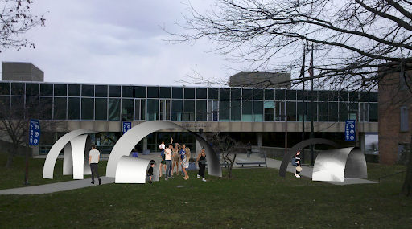

Newburgh Free Library
May 2019
The city of Newburgh, which lies in the Hudson valley, is currently looking for ways to revitalize local
culture and celebrate their community. The local Newburgh Free Library offered to collaborate with ideas
that would be presented to the head librarians to draw the community to the library in new ways.
Much of local history is kept in the library and spread through oral history.
This combination of local culture and oral history led to an intervention that
resulted in the cone. The cone was constructed after the shape of a classic
theatre, intending to create a space for book readings and oral history tellings.
Modularity of the structure was introduced by cutting it into mobile
pieces in order to extend the function of the structure to more activities.


